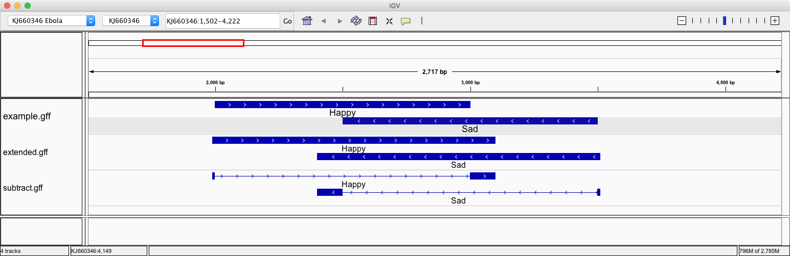
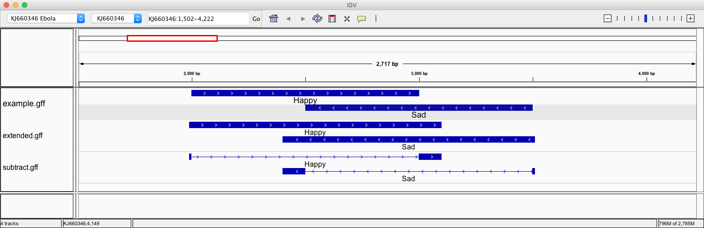

{% extends "unitbase.html" %}
{% load pytags %}
{% load handbook %}
{# title = Interval data formats #}
{# subtitle = representing genomic intervals #}
{# name = Representing genomic intervals as data #}
{% block body %}
{% markdown %}
- - -
### Genomic Intervals
Although genomes exist in three-dimensional space, in bioinformatics we often simplify our
model of the genome to two dimensions in order to facilitate visualization and analysis
tasks. Hence, coordinates for spatially describing genomic loci tend to follow the general
pattern of `chromosome`, `start`, `end` where "start" and "end" are both integers that represent the
left and right positions of an interval. Since nucleic acid molecules are polar
there is a directionality to each interval typically indicated by the `strand` column of the data.
There are two common interval representation formats `BED`and `GFF`. Each is a tab delimited
format where columns have different designations:
* [GFF3: Generic Feature Format][gff3-format]
* [BED: Browser Extensible Data][bed-format]
In addition GFF has prior versions (that should be avoided as much as possible) such as:
* [GFF2: Generic Feature Format][gff2-format] and
* [GTF: Gene Transfer Format][gtf-format].
The fundamental difference between the two main representation formats:
1. The coordinate system:
* `GFF`: 1 based, inclusive on both ends. This means that `[1,5]` contains `1,2,3,4,5`
and that coordinate `1` is the first coordinate of the genome.
* `BED`: is 0 based, non-inclusive on the right. This means that the interval `[1, 5)` contains `1,2,3,4`
and coordinate `1` is the second coordinate of the genome (`0` is the first).
2. Hierachical data representation:
* In the `BED` format a single line record stores all the information on the block structure of a record.
* In the `GFF` format the relationship is built from data distributed over multiple lines.
[bed-format]: https://genome.ucsc.edu/FAQ/FAQformat.html#format1
[gff2-format]: http://gmod.org/wiki/GFF2
[gff3-format]: http://www.sequenceontology.org/gff3.shtml
[gtf-format]: http://mblab.wustl.edu/GTF22.html
 See the {% link 'interval-formats.html' %} on more details on how the files represent data and relationships.
- - -
### Genome Arithmetic
Conceptually "genome arithmetics" is the process of performing operations on interval type data.
Modifying, adding, substracting, complementing and intersecting intervals from one or more files.
Because intervals are represented by two endpoints many of the traditional concepts of arithmetics
need to be extended.
There are two popular toolkits that are used to perform interval operations:
* [BedTools][bedtools-web] are a swiss-army knife of tools for a wide-range of genomics analysis tasks.
The most widely-used tools enable genome arithmetic: that is, set theory on the genome. For
example, bedtools allows one to intersect, merge, count, complement, and shuffle genomic intervals
from multiple files in widely-used genomic file formats such as BAM, BED, GFF/GTF, VCF
* [BEDOPS][bedops-web]
is an open-source command-line toolkit that performs highly efficient and scalable Boolean and
other set operations, statistical calculations, archiving, conversion and other management of
genomic data of arbitrary scale. Tasks can be easily split by chromosome for distributing
whole-genome analyses across a computational cluster.

The main challenge that we face when using these tools is to formulate a hypothesis or question
in such a way that can be deconstructed into individual genome arithmetic steps
See the {% link 'genome-arithmetic.html' %} on more details on how the perform data analytic steps.
[bedtools-web]: http://bedtools.readthedocs.org/en/latest/
[bedops-web]: http://bedops.readthedocs.org/en/latest/
{% endmarkdown %}
{% endblock %}
See the {% link 'interval-formats.html' %} on more details on how the files represent data and relationships.
- - -
### Genome Arithmetic
Conceptually "genome arithmetics" is the process of performing operations on interval type data.
Modifying, adding, substracting, complementing and intersecting intervals from one or more files.
Because intervals are represented by two endpoints many of the traditional concepts of arithmetics
need to be extended.
There are two popular toolkits that are used to perform interval operations:
* [BedTools][bedtools-web] are a swiss-army knife of tools for a wide-range of genomics analysis tasks.
The most widely-used tools enable genome arithmetic: that is, set theory on the genome. For
example, bedtools allows one to intersect, merge, count, complement, and shuffle genomic intervals
from multiple files in widely-used genomic file formats such as BAM, BED, GFF/GTF, VCF
* [BEDOPS][bedops-web]
is an open-source command-line toolkit that performs highly efficient and scalable Boolean and
other set operations, statistical calculations, archiving, conversion and other management of
genomic data of arbitrary scale. Tasks can be easily split by chromosome for distributing
whole-genome analyses across a computational cluster.

The main challenge that we face when using these tools is to formulate a hypothesis or question
in such a way that can be deconstructed into individual genome arithmetic steps
See the {% link 'genome-arithmetic.html' %} on more details on how the perform data analytic steps.
[bedtools-web]: http://bedtools.readthedocs.org/en/latest/
[bedops-web]: http://bedops.readthedocs.org/en/latest/
{% endmarkdown %}
{% endblock %}